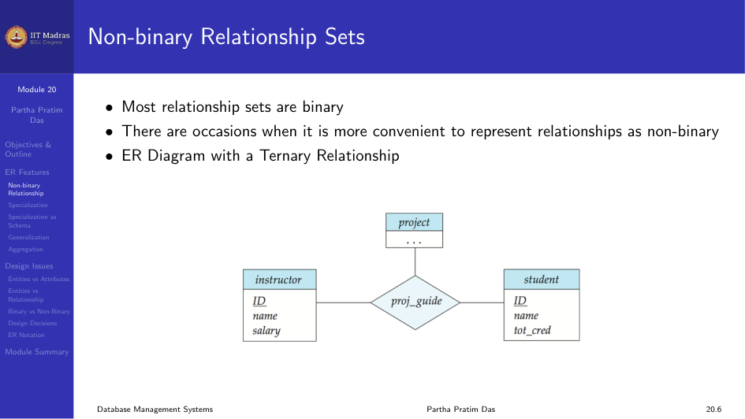
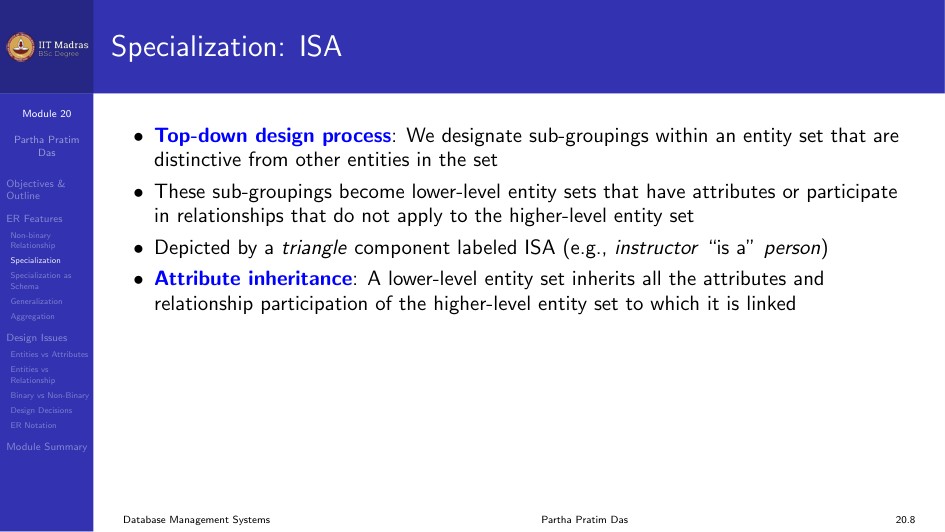
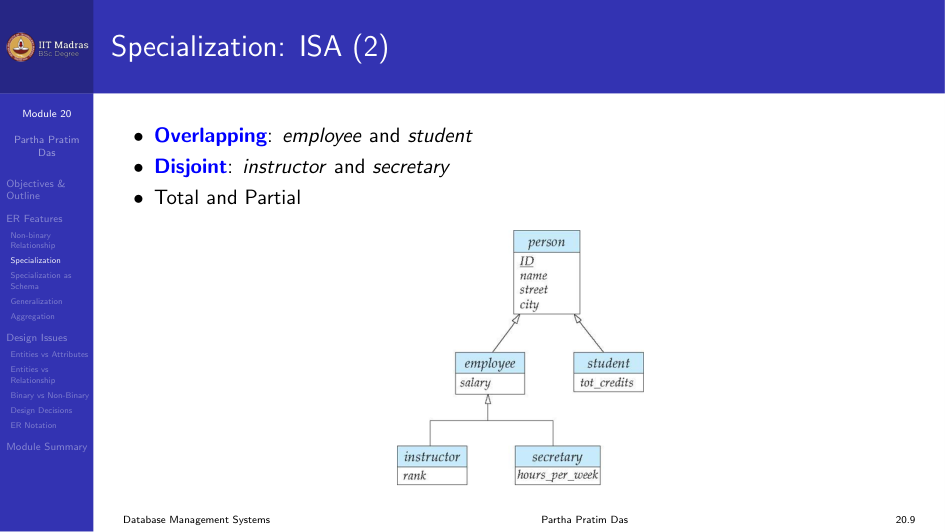
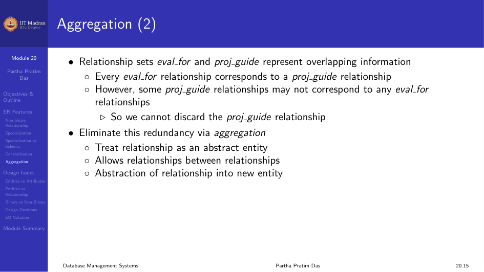
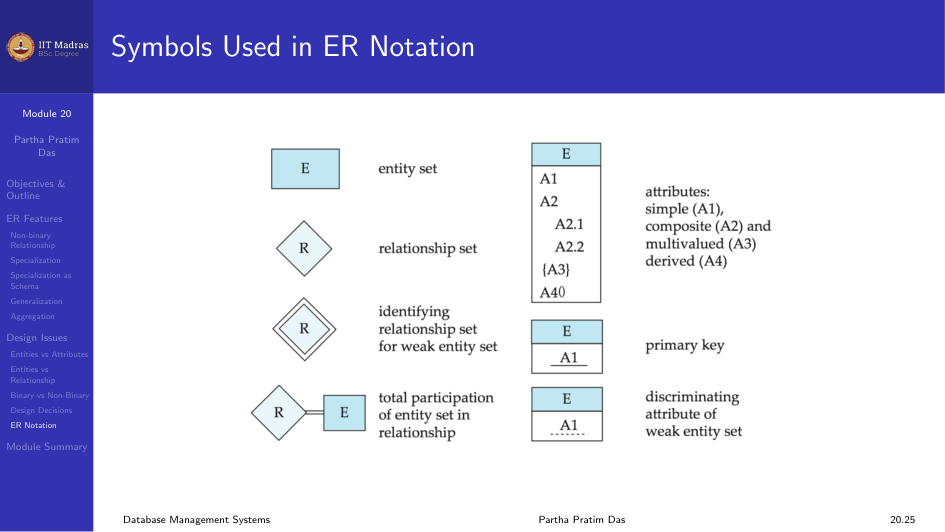

4.5 Entity-Relationship Model/3
In this module we look at extended features of the ER Model and discuss various design issues.
Extended ER Features
Non-binary Relationship Sets
Most relationship sets are binary. There are occasions when it is more convenient to represent relationships as non-binary (ternary or higher).

Cardinality Constraints on Ternary Relationships
We allow at most one arrow out of a ternary or higher-degree relationship to indicate a cardinality constraint. For example, an arrow from proj_guide to instructor indicates each student has at most one guide for a project.
If there is more than one arrow, there are two ways of defining the meaning, which can cause confusion. To avoid this, we allow at most one arrow.
Specialization (ISA)
Specialization is a top-down design process. We designate sub-groupings within an entity set that are distinctive from other entities in the set.
These sub-groupings become lower-level entity sets that have attributes or participate in relationships that do not apply to the higher-level entity set. It is depicted by a triangle component labeled ISA (meaning “is a”).
Attribute inheritance. A lower-level entity set inherits all the attributes and relationship participation of the higher-level entity set to which it is linked.

Overlapping vs Disjoint. In overlapping specialization, an entity can belong to more than one lower-level entity set (for example, a person can be both an employee and a student). In disjoint specialization, an entity can belong to at most one lower-level entity set (for example, an instructor or a secretary).
Total vs Partial. Total specialization means every higher-level entity must belong to one of the lower-level entity sets. Partial means some higher-level entities may not belong to any lower-level set.

Representing Specialization via Schema
There are two methods.
Method 1. Form a schema for the higher-level entity. Form a schema for each lower-level entity set, include the primary key of the higher-level entity set and local attributes. The drawback is that getting information about an employee requires accessing two relations.
Method 2. Form a schema for each entity set with all local and inherited attributes. The drawback is that attributes like name, street, and city may be stored redundantly for people who are both students and employees.
Generalization
Generalization is a bottom-up design process. We combine a number of entity sets that share the same features into a higher-level entity set.
Specialization and generalization are simple inversions of each other. They are represented in an ER diagram in the same way.
Completeness Constraint
The completeness constraint specifies whether or not an entity in the higher-level entity set must belong to at least one of the lower-level entity sets within a generalization.
- Total. An entity must belong to one of the lower-level entity sets.
- Partial. An entity need not belong to one of the lower-level entity sets. This is the default.
Aggregation
Aggregation treats a relationship as an abstract entity. It allows relationships between relationships.
Consider the ternary relationship proj_guide. Suppose we want to record evaluations of a student by a guide on a project. The relationship sets eval_for and proj_guide represent overlapping information. Every eval_for relationship corresponds to a proj_guide relationship, but some proj_guide relationships may not correspond to any eval_for relationship. So we cannot discard the proj_guide relationship.
We eliminate this redundancy through aggregation. We treat the relationship as an abstract entity.

Representing Aggregation via Schema
To represent aggregation, create a schema containing: - The primary key of the aggregated relationship. - The primary key of the associated entity set. - Any descriptive attributes.
In our example:
\text{eval\_for} = (\text{s\_ID}, \text{project\_id}, \text{i\_ID}, \text{evaluation\_id})
The schema proj_guide is redundant.
Design Issues
Entities vs Attributes
When designing a schema, you must decide whether a concept is better represented as an entity or an attribute. For example, using phone as an entity allows extra information about phone numbers and supports multiple phone numbers.
Entities vs Relationship Sets
A relationship set describes an action that occurs between entities. You also need to decide where to place relationship attributes. For example, should date be an attribute of advisor or of student?
Binary vs Non-binary Relationships
Although it is possible to replace any non-binary relationship set by a number of distinct binary relationship sets, an n-ary relationship set shows more clearly that several entities participate in a single relationship.
Some relationships that appear to be non-binary may be better represented using binary relationships. For example, a ternary relationship parents, relating a child to father and mother, is better replaced by two binary relationships father and mother. This allows partial information like only the mother being known.
But some relationships are naturally non-binary, such as proj_guide.
Converting Non-binary to Binary
In general, any non-binary relationship can be represented using binary relationships by creating an artificial entity set.
Replace relationship R between entity sets A, B, C by an entity set E and three relationship sets R_A, R_B, R_C. Create an identifying attribute for E and add any attributes of R to E.
For each relationship (a_i, b_i, c_i) in R, create a new entity e_i in E and add (e_i, a_i) to R_A, (e_i, b_i) to R_B, and (e_i, c_i) to R_C.
Translating all constraints may not be possible. There may be instances in the translated schema that cannot correspond to any instance of R.
Other Design Decisions
- Whether to use a strong or weak entity set.
- Whether to use specialization or generalization. This contributes to modularity in the design.
- Whether to use aggregation. You can treat the aggregate entity set as a single unit without concern for the details of its internal structure.
Symbols Used in ER Notation
Different notations exist for ER diagrams. The most common ones are Chen notation and IDE1FX (Crows feet notation).

Module Summary
We discussed the extended features of the ER Model and examined various design issues that come up when building ER diagrams.